Guitar Fretboard: Scales
The app is designed to help you learn scales and understand music theory. Customize every aspect of displaying scales or chord notes on a guitar fretboard. Play note, interval and scale trainer games with extensive customization options to learn the entire fretboard of the instrument of your choice
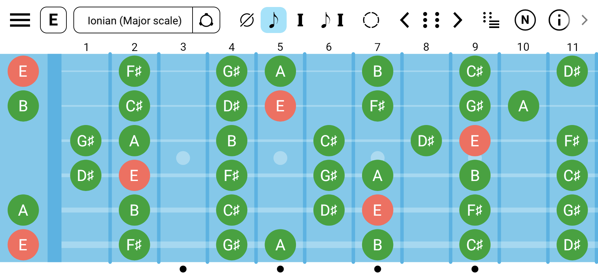
See It in Action
Explore the features that make Guitar Fretboard: Scales app the ultimate learning tool
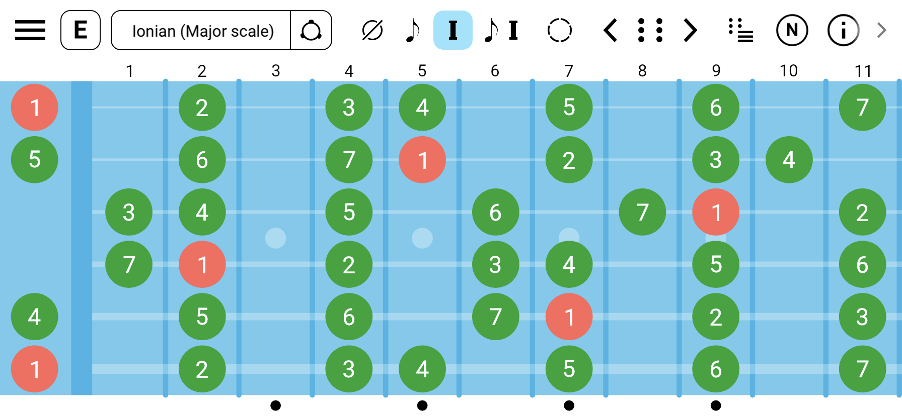
Visualize Any Scale
Choose from multiple built-in scales or create your own. See all the notes or intervals of a scale across the entire fretboard.
- Major, Minor, Pentatonic scales
- All modes of Major, Harmonic Minor, Melodic Minor and Harmonic Major scales
- Exotic, Bebop scales and more
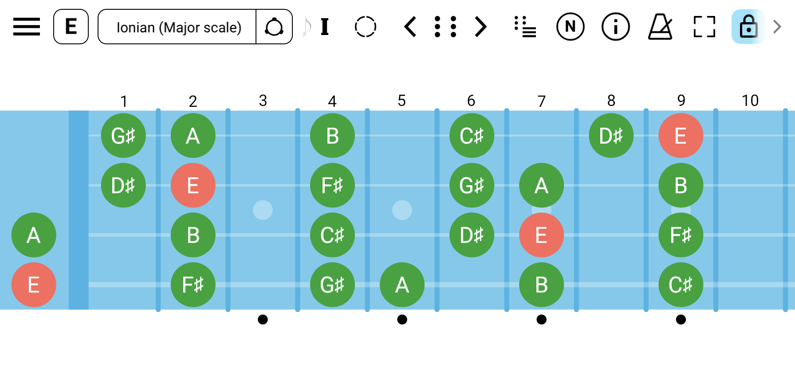
Playing Bass? No Problem
Supports multiple tunings for guitar, bass, ukulele, banjo, etc. Plus the flexibility to create custom tunings for any stringed instrument from 1 up to 14 strings.
- Guitar, bass, ukulele, banjo, etc
- Standard, drop, and open tunings
- Create custom tunings
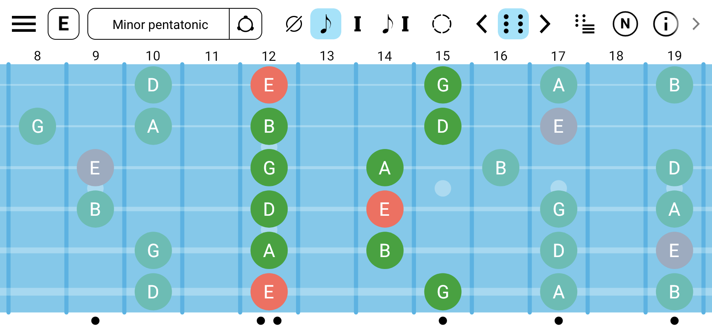
Scale Shapes
Explore scale shapes across the guitar fretboard.
- All scale positions for the most common scales
- CAGED shapes (Major and Minor based CAGED system)
- 3 notes per string shapes
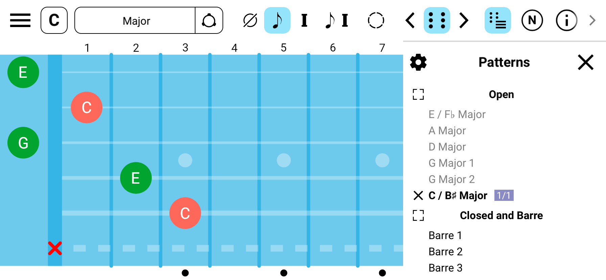
Chord Shapes
In addition to all chord notes across the fretboard you can see chord shapes to play the chord.
- Open chords
- Closed and Barre chord shapes
- Arpeggios
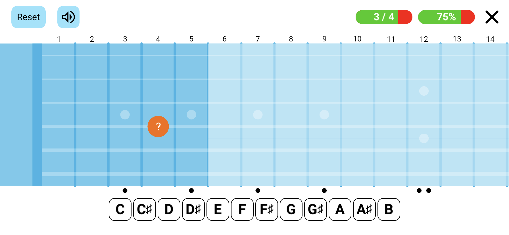
Fretboard Trainer
Multiple games to help recognize and memorize patterns on the fretboard.
- Find note/interval on the fretboard
- Identify note/interval on the fretboard
- Fill in scale position notes and more
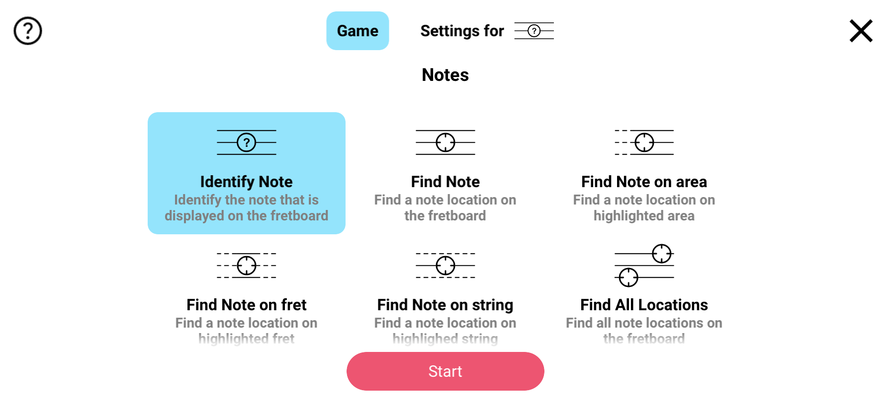
Different Types of Games
A wide selection of games with extensive customization options to match your preferences.
- Note games
- Interval games
- Scale games
- Ear training games (notes, intervals, melody)
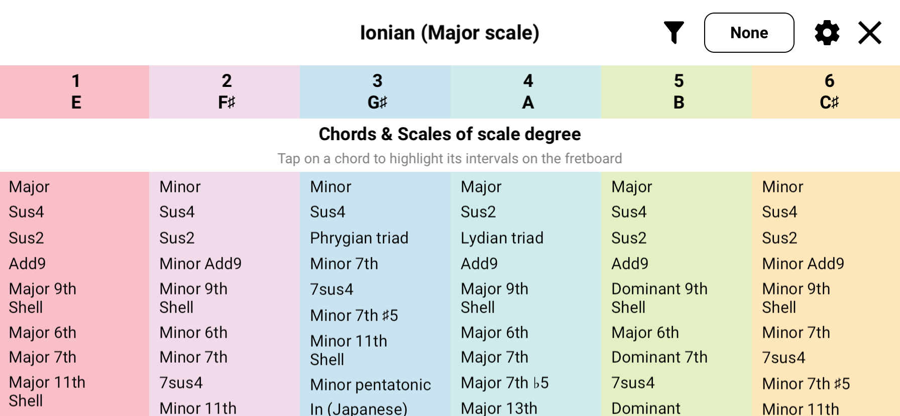
Explore Scale Degree Chords
Discover chord progressions within scales. Understand harmonic relationships and build better chord progressions for your compositions.
- View all chords within a scale
- Harmonize any scale in one button tap
- Build effective progressions
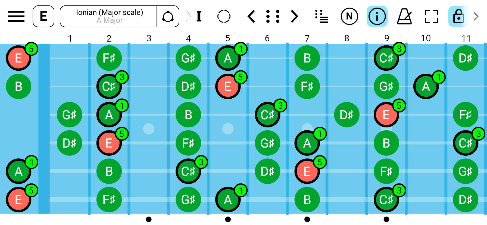
Highlight Scale Chord Intervals
Visualize scale chords on top of the parent scale. Perfect for understanding scale-chord relationships and improvisation.
- Highlight chord intervals within scales
- Discover relationship between scale and scale chord intervals
- Improve improvisation skills
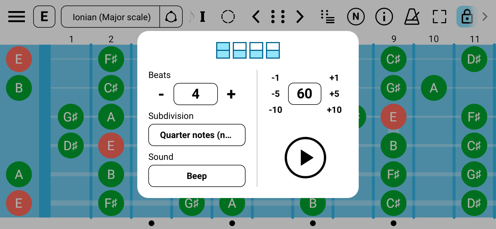
Practice with Built-in Metronome
Keep perfect time during your practice sessions with the integrated metronome. Adjustable tempo and time signatures help you develop solid rhythm skills.
- All changes apply instantly and on the fly
- Multiple time signatures and per beat configuration
- Multiple sounds
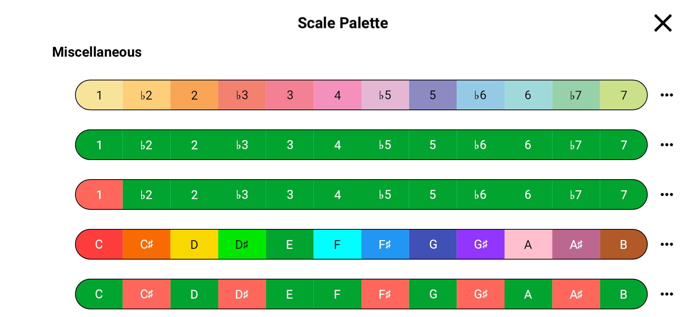
Scale Palettes
Color code notes and intervals to quickly navigate the scale.
- Variety of scale palettes
- Highlight important intervals or notes that matter
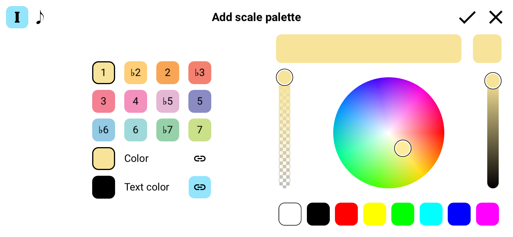
Custom Scale Palettes
Visualize intervals and notes with custom color palettes. Create your own color schemes to enhance learning and pattern recognition.
- Custom colors for markers and text
- Interval color coding
- Note color coding
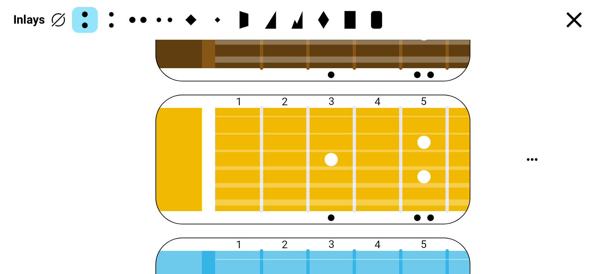
Choose Your Fretboard Style
Choose the color schema of your fretboard and inlays. Adjust visiblility of fret numbers and side dots. Change side dots locations for exotic instruments.
- Multiple fretboard designs
- Inlays to match almost any guitar
- Left handed support, monospace or proportional fret spacing, etc
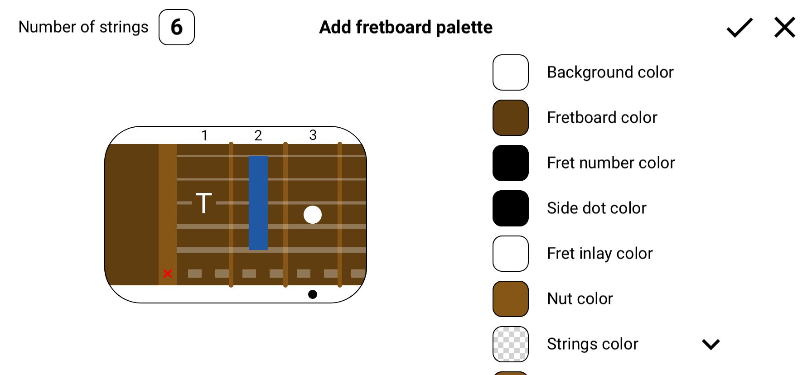
Custom Fretboard Styles
Fine-tune every color aspect of your fretboard if availalble styles did not satisfy your preferences.
- Customize background colors
- Adjust string and fret colors
- Save custom color schemes